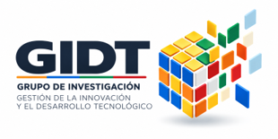
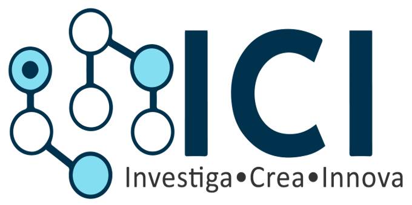

GIDT
Grupo de Investigación, Gestión de la Innovación y el Desarrollo Tecnológico
Somos un espacio de articulación académica dedicado a fortalecer el ecosistema SENNOVA. A través de nuestras líneas de investigación, conectamos el talento humano con soluciones innovadoras que responden a las necesidades reales del sector productivo y comercial.

Líneas de Investigación
Selecciona una línea para visualizar sus detalles y el semillero vinculado
Desarrollo Comercial y Redes Logísticas para la Productividad
Semillero Vinculado
Semilleros de Investigación ICI (Investiga, Crea, Innova)
Soluciones Organizacionales, Humanas y Turísticas para el Territorio
Semillero Vinculado
Semilleros de Investigación NEXUS (Conectando personas, procesos y organizaciones)
Transformación Digital, Innovación y Tecnologías en Gestión Contable
Semillero Vinculado
Semilleros de Investigación FININTEC
Transformación digital, industrias creativas y emprendimiento innovador
Semillero Vinculado
Semilleros de Investigación AGENCIA
Modelos de Investigación Pedagógica
Vinculación
Línea Transversal (Aplica a todos los Semilleros)
Eje Transversal
Investigación Pedagógica
Eje transversal estratégico SENNOVAEcosistema de Semilleros
Explora la estructura y los programas vinculados a cada semillero

Investiga, Crea, Innova
Logística
Mercados
Ventas
Comercio Internacional
Semillero AGENCIA
Análisis y desarrollo de software
Desarrollo publicitario
Emprendimiento tecnológico
Semillero FININTEC
Contabilidad
Banca y Finanzas
Conectando personas, procesos y organizaciones
Gestión Empresarial
Gestión Administrativa
Talento Humano
Gestión Documental
Turismo sostenible